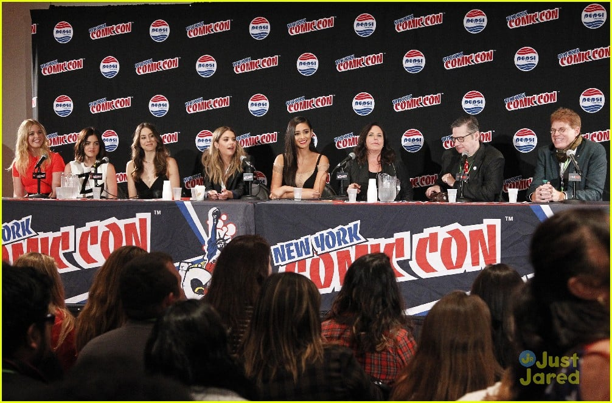

Fandom
O fandom de Pretty Little Liars é um dos mais engajados da década de 2010. Desde o início, fãs criavam teorias sobre quem seria “A”, compartilhavam cenas marcantes, memes e fanfics. Fóruns como Reddit e Tumblr eram recheados de discussões profundas sobre as pistas deixadas ao longo dos episódios, muitas vezes antecipando revelações que só viriam meses depois.
O engajamento foi tão grande que os produtores da série passaram a interagir diretamente com os fãs, soltando teasers e até mudando rumos da história para surpreendê-los. Muitos fãs cresceram acompanhando a série, o que gerou uma identificação emocional com os personagens. Reuniões de elenco, painéis na Comic-Con e eventos ao vivo mantinham essa conexão forte com o público.
Até hoje, mesmo após o fim da série, o fandom continua ativo nas redes sociais. Com o lançamento de novos spin-offs, como Pretty Little Liars: Original Sin, a base de fãs se renova. PLL se tornou uma referência cultural para a geração que cresceu entre 2010 e 2017 — e continua sendo lembrada por sua estética única, mistério envolvente e personagens cativantes.